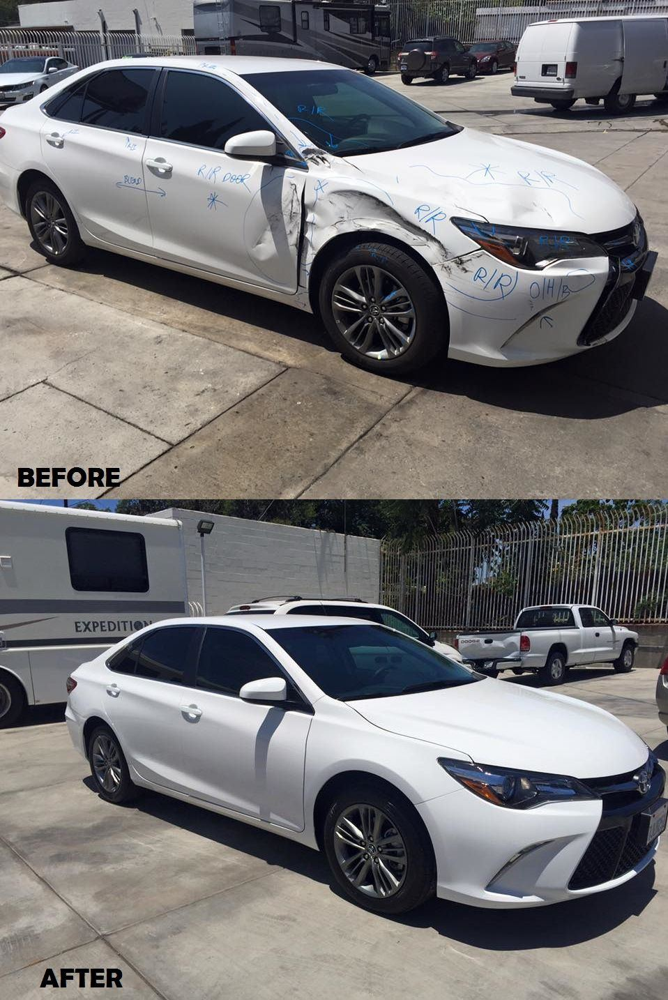
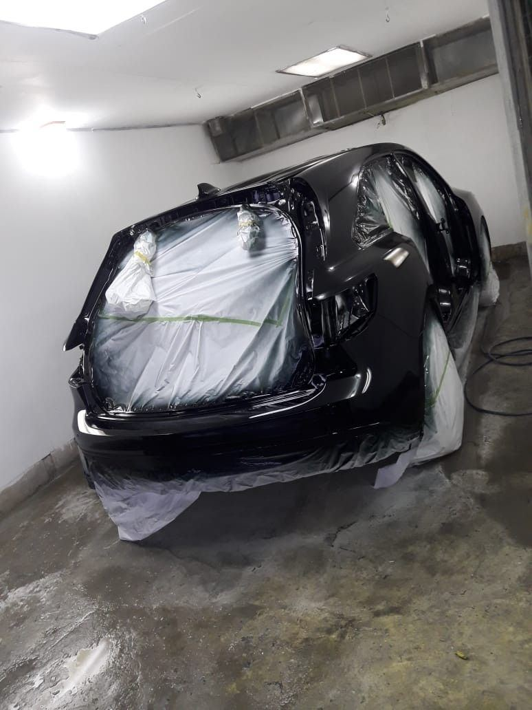
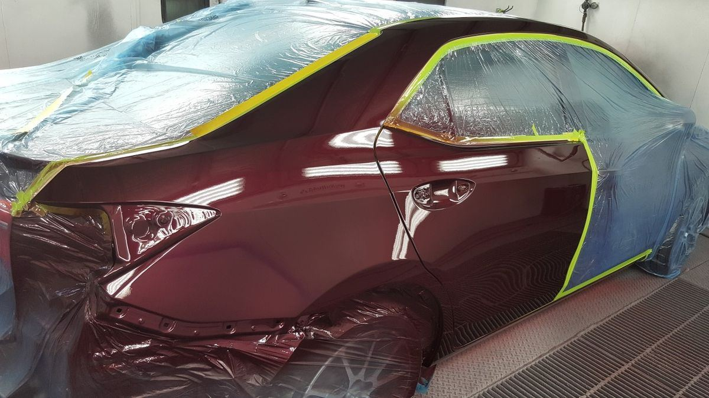
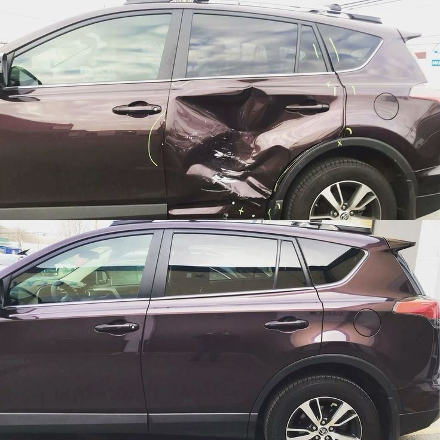
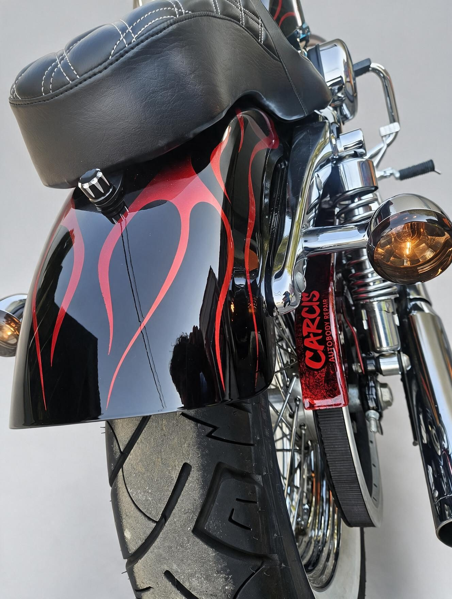
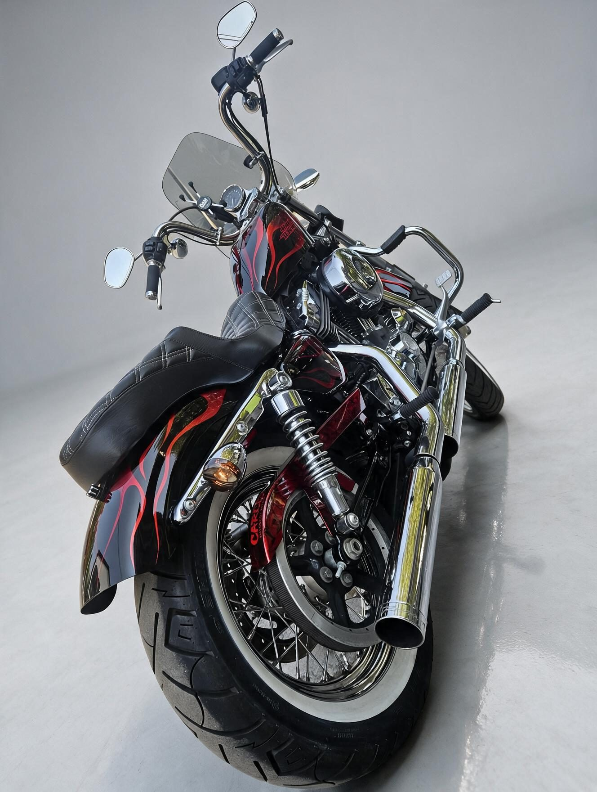
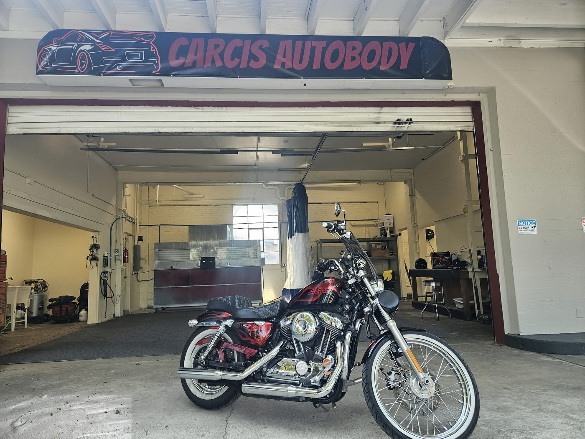

Vancouver, WA · Newly Opened
Collision, paint & custom body work done right.
Carcis Autobody Repair is a newly opened, certified shop handling dent, panel, rust, and collision repair, plus custom paint and design work — with fast turnaround and real communication from day one.
Get a Free Estimate
Free estimates · Insurance or out of pocket
Why Carcis
Owner trainingCertified Auto Body Tech
SpecialtyCustom Paint & Design
Launch offer10% Off · Thru 2/14/27
HoursMon–Fri, 8am–5pm
What we fix.
Whether you're going through an insurance claim or paying out of pocket, we'll walk you through it straight — no runaround, no upsell games.
01
Dent & Panel Repair
Dings and dents done clean, panels repaired or replaced to factory fit.
02
Rust Repair
Including rust work on classic and older vehicles — not just late-model cars.
03
Collision Repair
From minor fender-benders to major accident damage, insurance claim or not.
04
Paint, Custom Paint & Design
Full and partial paint jobs matched to your exact color, plus one-off custom designs built around what you actually want.
05
Custom Body Work
Beyond standard repair, for builds that need something specific.
See the difference.
Drag the line — a real Carcis repair, damage to done.
Recent work.
Straight from the shop floor — repairs in progress and finished results, not stock photos.

Full front-end repair — before & after
Fresh coat, still curing
Prepped and taped for paint
Panel repair, up close
Custom flame paint, up close
Custom paint & design
Right outside the shop